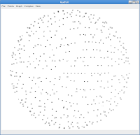
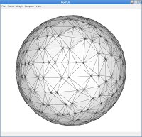
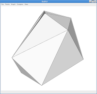
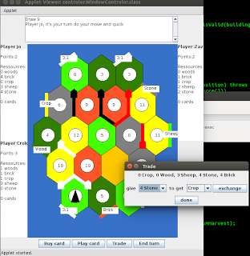

Gudhi's library : Skeleton-blockers simplicial complex data-structure and simplification
These two packages are based on a 2011 SoCG paper. One implements a light data-structure to represent simplicial complexes of arbitrary dimension. The other proposes an efficient code for simplification operators such as edge collapse (in the 3D case, it is around 65% times faster for simplifying random two dimensional spheres with n points than CGAL).
Gudhi's library : User interface
This package is a user interface that illustrates some of the Gudhi's functionnalities. You can load point clouds, build simplicial complexes, simplify them and so on.
|  |
 |
 |
|
10000 points in R^9 (e.g. rotational matrices) that samples regularly SO(3).
They are projected into R^3 for vizualization. Note that there projection is a sphere in R^3.
|
Rips complex built uppon these points. It has over 230 millions of simplices and the dimension of the mesh is 12.
|
Complex obtained after homotopy-preserving simplification (took 2 second on 2.5Ghz single core). It has only 16 vertices and very few simplices. Computing topological invariant such as betti numbers of homology group is then very fast.
|
Language: c++11
Source code : available in Gudhi development branch.
Gudhi webpage.
Binary :
.exe
Dependencies : boost, Qt4, QGLViewer, CGAL 4.5, Gudhi.
Settlers of Catan
This is an implementation of the board game settlers of catan. This is more a proof of concept, other implementations are publicly available as well.

Language: Java
Source code : available in github